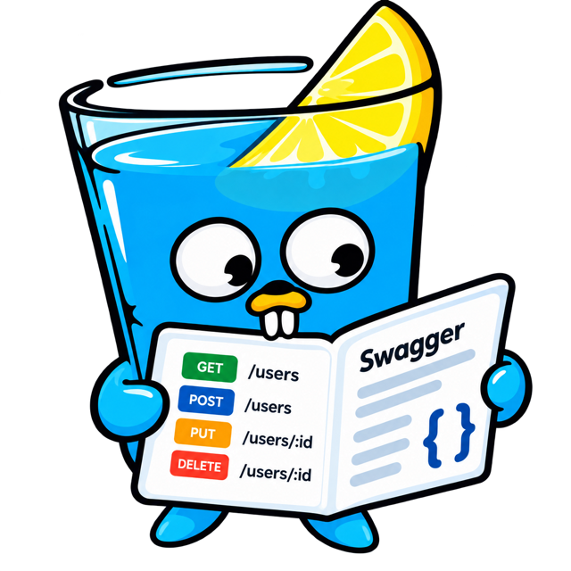

// GetUser godoc
// @Summary Get a user
// @Description Get a user by ID
// @Tags users
// @Produce json
// @Param id path string true "User ID"
// @Success 200 {object} User
// @Router /users/{id} [get]
func GetUser(c *gin.Context) { ... }
// ...repeat for every handler, then:
$ swag initGo · Gin · OpenAPI 3.0.3
API docs for Gin.
Zero annotations.
Register your routes like always, add one line, and get interactive docs at
/docs, generated live from your router. No comments, no swag init,
no generated files to commit.
$ go get github.com/anikchand461/gindocs
- 1 line to add
- 0 annotations
- ~50 KB embedded UI
- 0 CDN calls

The problem
Stop writing comments
to document your routes.
FastAPI gives Python developers /docs for free. Gin developers usually get a block of
annotations above every handler, and a docs package to regenerate every time something changes.
r.GET("/users", GetUsers)
r.GET("/users/:id", GetUser)
gindocs.New(r).Serve("/docs")
// That's it. Open /docs.- Docs can't drift: routes are read live
- New routes show up instantly
- Nothing to generate or commit
How it works
Gin already knows your routes.
gindocs asks it, then builds a standard OpenAPI document and an interactive page on top.
-
1
Register routes
Exactly like you do today. Groups, middleware and path params all work.
r.GET("/users/:id", GetUser) -
2
Add one line
gindocs reads
router.Routes()and generates the spec on every request.gindocs.New(r).Serve("/docs") -
3
Open /docs
Browse endpoints, authorize, and send real requests from the browser.
localhost:8080/docs
Gin engine
router.Routes()
OpenAPI 3.0.3
/docs
/openapi.json
Features
Everything you expect from /docs.
Zero annotations
Paths, path parameters, tags from the URL, summaries and operationIds from handler names: GetUserByID → “Get User By ID”.
Detail when you want it
Add bodies, queries and responses with the structs you already bind. binding tags become required fields, enums and limits.
Forms & file uploads
*multipart.FileHeader fields become file pickers. Multipart and URL-encoded forms are sent exactly like your clients would.
Authorize built in
Bearer, Basic and API-key auth with one call each. Mark open endpoints with .Public().
A real console
Pre-filled JSON with code-editor brackets and indentation, typed inputs, live cURL, status, timing, headers and download.
Offline & tiny
The ~50 KB UI ships inside your binary with go:embed. No CDN, no frontend build, no extra service.
Light, dark & mobile
Follows the system theme with a toggle to override, and a slide-out route drawer on phones.
Standard OpenAPI
/openapi.json is plain OpenAPI 3.0.3. Import it into Postman, Insomnia, Swagger UI or a client generator.
The docs UI
Not another Swagger skin.
A purpose-built, two-pane docs page that's fast to scan and fun to use.
Quickstart
From zero to /docs in a minute.
package main
import (
"net/http"
"github.com/anikchand461/gindocs"
"github.com/gin-gonic/gin"
)
func main() {
r := gin.Default()
r.GET("/users/:id", func(c *gin.Context) {
c.JSON(http.StatusOK, gin.H{"id": c.Param("id")})
})
gindocs.New(r).Serve("/docs") // ← the only new line
r.Run(":8080")
}docs := gindocs.New(r)
docs.Title = "Users API"
docs.BearerAuth()
docs.Route("POST /users").
Summary("Create a user").
Body(CreateUser{}). // the struct you pass to ShouldBindJSON
Response(201, User{}).
Response(400, APIError{})
docs.Route("GET /users").
Query(ListUsers{}) // `form` tags → query parameters
docs.Route("GET /health").Public()
docs.Serve("/docs")type AvatarForm struct {
Avatar *multipart.FileHeader `form:"avatar" binding:"required"`
Caption string `form:"caption" binding:"max=80"`
}
// A file field makes it multipart/form-data,
// and Try it shows a file picker.
docs.Route("POST /users/:id/avatar").Form(AvatarForm{})Ship docs with your next commit.
One import, one line, and your Gin API documents itself.
$ go get github.com/anikchand461/gindocs